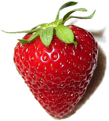

Suco de Morango
O suco de morango é rico em vitamina C, potássio, ácido fólico, manganês, cobre, zinco, vitamina E, cálcio, vitaminas da família B, compostos polifenólicos e açúcares naturais, todos os quais podem ter um efeito mensurável em vários sistemas em nosso corpo.
Beneficios do mamão
Confira a seguir os benefícios do mamão:
- Riquíssima fonte de vitaminas e minerais;
- Facilita o trânsito intestinal;
- Ajuda a proteger o intestino;
- Auxilia no emagrecimento;
- Controla colesterol e triglicérides;
- Auxilia no equilíbrio do diabetes;
- Fortalece o sistema imunológico
Data: 28/10/2023
Beneficios dos exercicios fisicos
Os exercícios físicos podem trazer diversos benefícios para a saúde.
Eles aceleram o metabolismo;
Fazem bem para o coração e para a autoestima;
Aumenta a capacidade de concentração, pois ajuda a melhorar o condicionamento mental;
Ajuda também na memória;
Melhora saúde dos músculos e ossos;